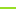

<!doctype html>
<html lang="en">
    <head>
        <meta charset="utf-8">
        <meta http-equiv="X-UA-Compatible" content="IE=edge">
        <meta name="viewport" content="initial-scale=1,user-scalable=no,maximum-scale=1,width=device-width">
        <meta name="mobile-web-app-capable" content="yes">
        <meta name="apple-mobile-web-app-capable" content="yes">
        <link rel="stylesheet" href="css/leaflet.css">
        <link rel="stylesheet" href="css/qgis2web.css"><link rel="stylesheet" href="css/fontawesome-all.min.css">
        <link rel="stylesheet" href="css/leaflet-measure.css">
        <style>
        html, body, #map {
            width: 100%;
            height: 100%;
            padding: 0;
            margin: 0;
        }
        </style>
        <title></title>
    </head>
    <body>
        <div id="map">
        </div>
        <script src="js/qgis2web_expressions.js"></script>
        <script src="js/leaflet.js"></script>
        <script src="js/multi-style-layer.js"></script>
        <script src="js/leaflet.rotatedMarker.js"></script>
        <script src="js/leaflet.pattern.js"></script>
        <script src="js/leaflet-hash.js"></script>
        <script src="js/Autolinker.min.js"></script>
        <script src="js/rbush.min.js"></script>
        <script src="js/labelgun.min.js"></script>
        <script src="js/labels.js"></script>
        <script src="js/leaflet.wms.js"></script>
        <script src="js/leaflet-measure.js"></script>
        <script src="data/Pagasti_3.js"></script>
        <script src="data/Csunovads_4.js"></script>
        <script src="data/Drenas_5.js"></script>
        <script src="data/Kolektori_6.js"></script>
        <script src="data/Grvji_7.js"></script>
        <script src="data/akas_Cesis_8.js"></script>
        <script>
        var map = L.map('map', {
            zoomControl:true, maxZoom:18, minZoom:1
        }).fitBounds([[56.89281802892471,24.432492112235916],[57.523449514420825,26.537896377691627]]);
        var hash = new L.Hash(map);
        map.attributionControl.setPrefix('<a href="https://github.com/tomchadwin/qgis2web" target="_blank">qgis2web</a> &middot; <a href="https://leafletjs.com" title="A JS library for interactive maps">Leaflet</a> &middot; <a href="https://qgis.org">QGIS</a>');
        var autolinker = new Autolinker({truncate: {length: 30, location: 'smart'}});
        var measureControl = new L.Control.Measure({
            position: 'topleft',
            primaryLengthUnit: 'meters',
            secondaryLengthUnit: 'kilometers',
            primaryAreaUnit: 'sqmeters',
            secondaryAreaUnit: 'hectares'
        });
        measureControl.addTo(map);
        document.getElementsByClassName('leaflet-control-measure-toggle')[0]
        .innerHTML = '';
        document.getElementsByClassName('leaflet-control-measure-toggle')[0]
        .className += ' fas fa-ruler';
        var bounds_group = new L.featureGroup([]);
        function setBounds() {
            map.setMaxBounds(map.getBounds());
        }
        map.createPane('pane_Topogrfiskkarte110k_0');
        map.getPane('pane_Topogrfiskkarte110k_0').style.zIndex = 400;
        var layer_Topogrfiskkarte110k_0 = L.WMS.layer("http://lvmgeoserver.lvm.lv/geoserver/ows", "public:Topo10DTM", {
            pane: 'pane_Topogrfiskkarte110k_0',
            format: 'image/png',
            uppercase: true,
            transparent: true,
            continuousWorld : true,
            tiled: true,
            info_format: 'text/html',
            opacity: 1,
            identify: false,
            attribution: '',
        });
        map.createPane('pane_Reljefaslpumakarte_1');
        map.getPane('pane_Reljefaslpumakarte_1').style.zIndex = 401;
        var layer_Reljefaslpumakarte_1 = L.WMS.layer("http://lvmgeoserver.lvm.lv/geoserver/ows", "public:SlopeLKS", {
            pane: 'pane_Reljefaslpumakarte_1',
            format: 'image/png',
            uppercase: true,
            transparent: true,
            continuousWorld : true,
            tiled: true,
            info_format: 'text/html',
            opacity: 1,
            identify: false,
            attribution: '',
        });
        map.createPane('pane_Orto_LKS_2');
        map.getPane('pane_Orto_LKS_2').style.zIndex = 402;
        var layer_Orto_LKS_2 = L.WMS.layer("http://lvmgeoserver.lvm.lv/geoserver/ows", "public:Orto_LKS", {
            pane: 'pane_Orto_LKS_2',
            format: 'image/png',
            uppercase: true,
            transparent: true,
            continuousWorld : true,
            tiled: true,
            info_format: 'text/html',
            opacity: 1,
            identify: false,
            attribution: '',
        });
        function pop_Pagasti_3(feature, layer) {
            var popupContent = '<table>\
                    <tr>\
                        <td colspan="2"><strong>Pagasts</strong><br />' + (feature.properties['Nos_Pag'] !== null ? autolinker.link(feature.properties['Nos_Pag'].toLocaleString()) : '') + '</td>\
                    </tr>\
                </table>';
            layer.bindPopup(popupContent, {maxHeight: 400});
        }

        function style_Pagasti_3_0() {
            return {
                pane: 'pane_Pagasti_3',
                opacity: 1,
                color: 'rgba(0,0,0,1.0)',
                dashArray: '',
                lineCap: 'square',
                lineJoin: 'bevel',
                weight: 1.0,
                fillOpacity: 0,
                interactive: false,
            }
        }
        map.createPane('pane_Pagasti_3');
        map.getPane('pane_Pagasti_3').style.zIndex = 403;
        map.getPane('pane_Pagasti_3').style['mix-blend-mode'] = 'normal';
        var layer_Pagasti_3 = new L.geoJson(json_Pagasti_3, {
            attribution: '',
            interactive: false,
            dataVar: 'json_Pagasti_3',
            layerName: 'layer_Pagasti_3',
            pane: 'pane_Pagasti_3',
            onEachFeature: pop_Pagasti_3,
            style: style_Pagasti_3_0,
        });
        bounds_group.addLayer(layer_Pagasti_3);
        map.addLayer(layer_Pagasti_3);
        function pop_Csunovads_4(feature, layer) {
        }

        function style_Csunovads_4_0() {
            return {
                pane: 'pane_Csunovads_4',
                opacity: 1,
                color: 'rgba(0,0,0,1.0)',
                dashArray: '10,5,1,5',
                lineCap: 'square',
                lineJoin: 'bevel',
                weight: 2.0,
                fillOpacity: 0,
                interactive: false,
            }
        }
        map.createPane('pane_Csunovads_4');
        map.getPane('pane_Csunovads_4').style.zIndex = 404;
        map.getPane('pane_Csunovads_4').style['mix-blend-mode'] = 'normal';
        var layer_Csunovads_4 = new L.geoJson(json_Csunovads_4, {
            attribution: '',
            interactive: false,
            dataVar: 'json_Csunovads_4',
            layerName: 'layer_Csunovads_4',
            pane: 'pane_Csunovads_4',
            onEachFeature: pop_Csunovads_4,
            style: style_Csunovads_4_0,
        });
        bounds_group.addLayer(layer_Csunovads_4);
        map.addLayer(layer_Csunovads_4);
        function pop_Drenas_5(feature, layer) {
            var popupContent = '<table>\
                    <tr>\
                        <td colspan="2">' + (feature.properties['FID'] !== null ? autolinker.link(feature.properties['FID'].toLocaleString()) : '') + '</td>\
                    </tr>\
                </table>';
            layer.bindPopup(popupContent, {maxHeight: 400});
        }

        function style_Drenas_5_0() {
            return {
                pane: 'pane_Drenas_5',
                opacity: 1,
                color: 'rgba(0,77,97,1.0)',
                dashArray: '',
                lineCap: 'square',
                lineJoin: 'bevel',
                weight: 1.0,
                fillOpacity: 0,
                interactive: false,
            }
        }
        map.createPane('pane_Drenas_5');
        map.getPane('pane_Drenas_5').style.zIndex = 405;
        map.getPane('pane_Drenas_5').style['mix-blend-mode'] = 'normal';
        var layer_Drenas_5 = new L.geoJson(json_Drenas_5, {
            attribution: '',
            interactive: false,
            dataVar: 'json_Drenas_5',
            layerName: 'layer_Drenas_5',
            pane: 'pane_Drenas_5',
            onEachFeature: pop_Drenas_5,
            style: style_Drenas_5_0,
        });
        bounds_group.addLayer(layer_Drenas_5);
        map.addLayer(layer_Drenas_5);
        function pop_Kolektori_6(feature, layer) {
            var popupContent = '<table>\
                    <tr>\
                        <td colspan="2">' + (feature.properties['fid'] !== null ? autolinker.link(feature.properties['fid'].toLocaleString()) : '') + '</td>\
                    </tr>\
                </table>';
            layer.bindPopup(popupContent, {maxHeight: 400});
        }

        function style_Kolektori_6_0() {
            return {
                pane: 'pane_Kolektori_6',
                opacity: 1,
                color: 'rgba(0,77,0,1.0)',
                dashArray: '',
                lineCap: 'round',
                lineJoin: 'round',
                weight: 2.0,
                fillOpacity: 0,
                interactive: false,
            }
        }
        function style_Kolektori_6_1() {
            return {
                pane: 'pane_Kolektori_6',
                opacity: 1,
                color: 'rgba(181,255,31,1.0)',
                dashArray: '',
                lineCap: 'round',
                lineJoin: 'round',
                weight: 2.0,
                fillOpacity: 0,
                interactive: false,
            }
        }
        map.createPane('pane_Kolektori_6');
        map.getPane('pane_Kolektori_6').style.zIndex = 406;
        map.getPane('pane_Kolektori_6').style['mix-blend-mode'] = 'normal';
        var layer_Kolektori_6 = new L.geoJson.multiStyle(json_Kolektori_6, {
            attribution: '',
            interactive: false,
            dataVar: 'json_Kolektori_6',
            layerName: 'layer_Kolektori_6',
            pane: 'pane_Kolektori_6',
            onEachFeature: pop_Kolektori_6,
            styles: [style_Kolektori_6_0,style_Kolektori_6_1,]
        });
        bounds_group.addLayer(layer_Kolektori_6);
        map.addLayer(layer_Kolektori_6);
        function pop_Grvji_7(feature, layer) {
        }

        function style_Grvji_7_0() {
            return {
                pane: 'pane_Grvji_7',
                opacity: 1,
                color: 'rgba(0,28,234,1.0)',
                dashArray: '',
                lineCap: 'square',
                lineJoin: 'bevel',
                weight: 2.0,
                fillOpacity: 0,
                interactive: false,
            }
        }
        map.createPane('pane_Grvji_7');
        map.getPane('pane_Grvji_7').style.zIndex = 407;
        map.getPane('pane_Grvji_7').style['mix-blend-mode'] = 'normal';
        var layer_Grvji_7 = new L.geoJson(json_Grvji_7, {
            attribution: '',
            interactive: false,
            dataVar: 'json_Grvji_7',
            layerName: 'layer_Grvji_7',
            pane: 'pane_Grvji_7',
            onEachFeature: pop_Grvji_7,
            style: style_Grvji_7_0,
        });
        bounds_group.addLayer(layer_Grvji_7);
        map.addLayer(layer_Grvji_7);
        function pop_akas_Cesis_8(feature, layer) {
        }

        function style_akas_Cesis_8_0() {
            return {
                pane: 'pane_akas_Cesis_8',
                radius: 4.0,
                opacity: 1,
                color: 'rgba(172,0,0,1.0)',
                dashArray: '',
                lineCap: 'butt',
                lineJoin: 'miter',
                weight: 1.0,
                fill: true,
                fillOpacity: 1,
                fillColor: 'rgba(255,255,255,0.0)',
                interactive: false,
            }
        }
        map.createPane('pane_akas_Cesis_8');
        map.getPane('pane_akas_Cesis_8').style.zIndex = 408;
        map.getPane('pane_akas_Cesis_8').style['mix-blend-mode'] = 'normal';
        var layer_akas_Cesis_8 = new L.geoJson(json_akas_Cesis_8, {
            attribution: '',
            interactive: false,
            dataVar: 'json_akas_Cesis_8',
            layerName: 'layer_akas_Cesis_8',
            pane: 'pane_akas_Cesis_8',
            onEachFeature: pop_akas_Cesis_8,
            pointToLayer: function (feature, latlng) {
                var context = {
                    feature: feature,
                    variables: {}
                };
                return L.circleMarker(latlng, style_akas_Cesis_8_0(feature));
            },
        });
        bounds_group.addLayer(layer_akas_Cesis_8);
        map.addLayer(layer_akas_Cesis_8);
        map.on("zoomend", function(e) {
            if (map.getZoom() <= 18 && map.getZoom() >= 8) {
                map.addLayer(layer_Pagasti_3);
            } else if (map.getZoom() > 18 || map.getZoom() < 8) {
                map.removeLayer(layer_Pagasti_3);
            }
            if (map.getZoom() <= 18 && map.getZoom() >= 8) {
                map.addLayer(layer_Csunovads_4);
            } else if (map.getZoom() > 18 || map.getZoom() < 8) {
                map.removeLayer(layer_Csunovads_4);
            }
            if (map.getZoom() <= 18 && map.getZoom() >= 15) {
                map.addLayer(layer_Drenas_5);
            } else if (map.getZoom() > 18 || map.getZoom() < 15) {
                map.removeLayer(layer_Drenas_5);
            }
            if (map.getZoom() <= 19 && map.getZoom() >= 14) {
                map.addLayer(layer_Kolektori_6);
            } else if (map.getZoom() > 19 || map.getZoom() < 14) {
                map.removeLayer(layer_Kolektori_6);
            }
            if (map.getZoom() <= 18 && map.getZoom() >= 12) {
                map.addLayer(layer_Grvji_7);
            } else if (map.getZoom() > 18 || map.getZoom() < 12) {
                map.removeLayer(layer_Grvji_7);
            }
            if (map.getZoom() <= 18 && map.getZoom() >= 14) {
                map.addLayer(layer_akas_Cesis_8);
            } else if (map.getZoom() > 18 || map.getZoom() < 14) {
                map.removeLayer(layer_akas_Cesis_8);
            }
        });
            if (map.getZoom() <= 18 && map.getZoom() >= 8) {
                map.addLayer(layer_Pagasti_3);
            } else if (map.getZoom() > 18 || map.getZoom() < 8) {
                map.removeLayer(layer_Pagasti_3);
            }
            if (map.getZoom() <= 18 && map.getZoom() >= 8) {
                map.addLayer(layer_Csunovads_4);
            } else if (map.getZoom() > 18 || map.getZoom() < 8) {
                map.removeLayer(layer_Csunovads_4);
            }
            if (map.getZoom() <= 18 && map.getZoom() >= 15) {
                map.addLayer(layer_Drenas_5);
            } else if (map.getZoom() > 18 || map.getZoom() < 15) {
                map.removeLayer(layer_Drenas_5);
            }
            if (map.getZoom() <= 19 && map.getZoom() >= 14) {
                map.addLayer(layer_Kolektori_6);
            } else if (map.getZoom() > 19 || map.getZoom() < 14) {
                map.removeLayer(layer_Kolektori_6);
            }
            if (map.getZoom() <= 18 && map.getZoom() >= 12) {
                map.addLayer(layer_Grvji_7);
            } else if (map.getZoom() > 18 || map.getZoom() < 12) {
                map.removeLayer(layer_Grvji_7);
            }
            if (map.getZoom() <= 18 && map.getZoom() >= 14) {
                map.addLayer(layer_akas_Cesis_8);
            } else if (map.getZoom() > 18 || map.getZoom() < 14) {
                map.removeLayer(layer_akas_Cesis_8);
            }
        var baseMaps = {
            "Ortofoto (jaunākais pieejamais)": layer_Orto_LKS_2,
            "Reljefa slīpuma karte": layer_Reljefaslpumakarte_1,
            "Topogrāfiskā karte (1:10k)": layer_Topogrfiskkarte110k_0  
        };

        L.control.layers(baseMaps,{' akas_Cesis': layer_akas_Cesis_8,' Grāvji': layer_Grvji_7,' Kolektori': layer_Kolektori_6,' Drenas': layer_Drenas_5,' Cēsu novads': layer_Csunovads_4,' Pagasti': layer_Pagasti_3,},{collapsed:false}).addTo(map);
        setBounds();
        var i = 0;
        layer_Pagasti_3.eachLayer(function(layer) {
            var context = {
                feature: layer.feature,
                variables: {}
            };
            layer.bindTooltip((layer.feature.properties['Nos_Pag'] !== null?String('<div style="color: #323232; font-size: 8pt; font-family: \'Arial\', sans-serif;">' + layer.feature.properties['Nos_Pag']) + '</div>':''), {permanent: true, offset: [-0, -16], className: 'css_Pagasti_3'});
            labels.push(layer);
            totalMarkers += 1;
              layer.added = true;
              addLabel(layer, i);
              i++;
        });
        resetLabels([layer_Pagasti_3]);
        map.on("zoomend", function(){
            resetLabels([layer_Pagasti_3]);
        });
        map.on("layeradd", function(){
            resetLabels([layer_Pagasti_3]);
        });
        map.on("layerremove", function(){
            resetLabels([layer_Pagasti_3]);
        });
        </script>
    </body>
</html>
